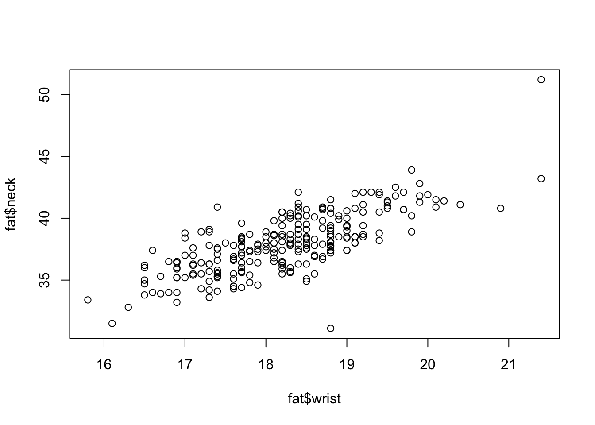
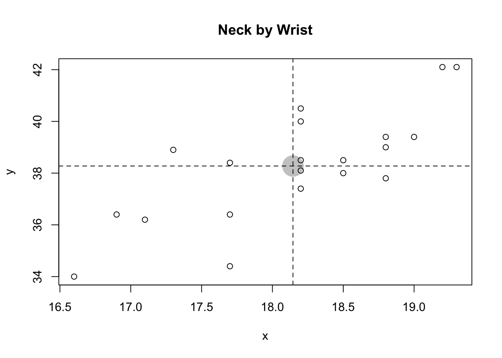
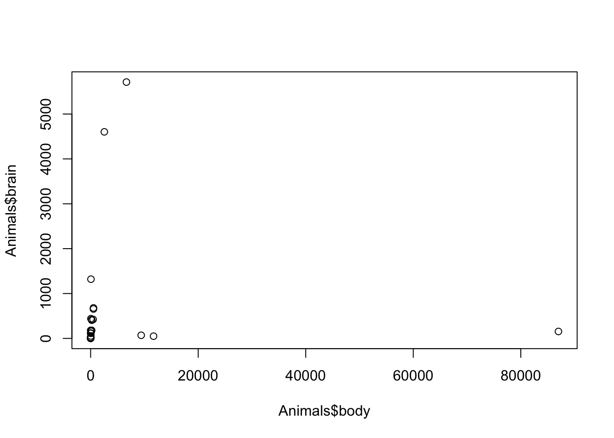
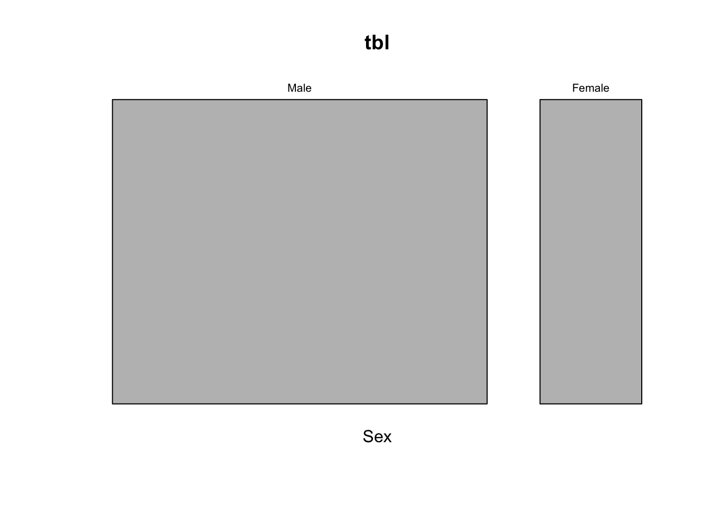
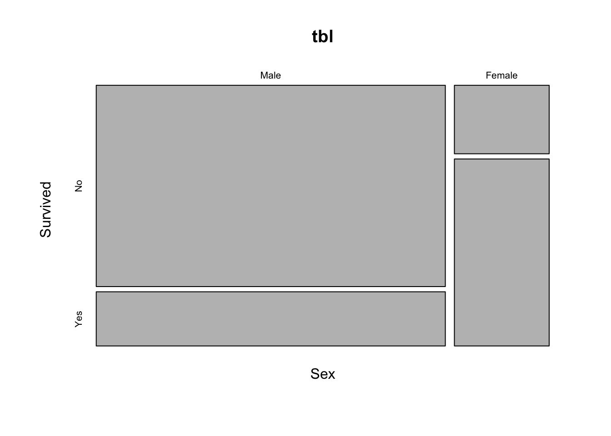
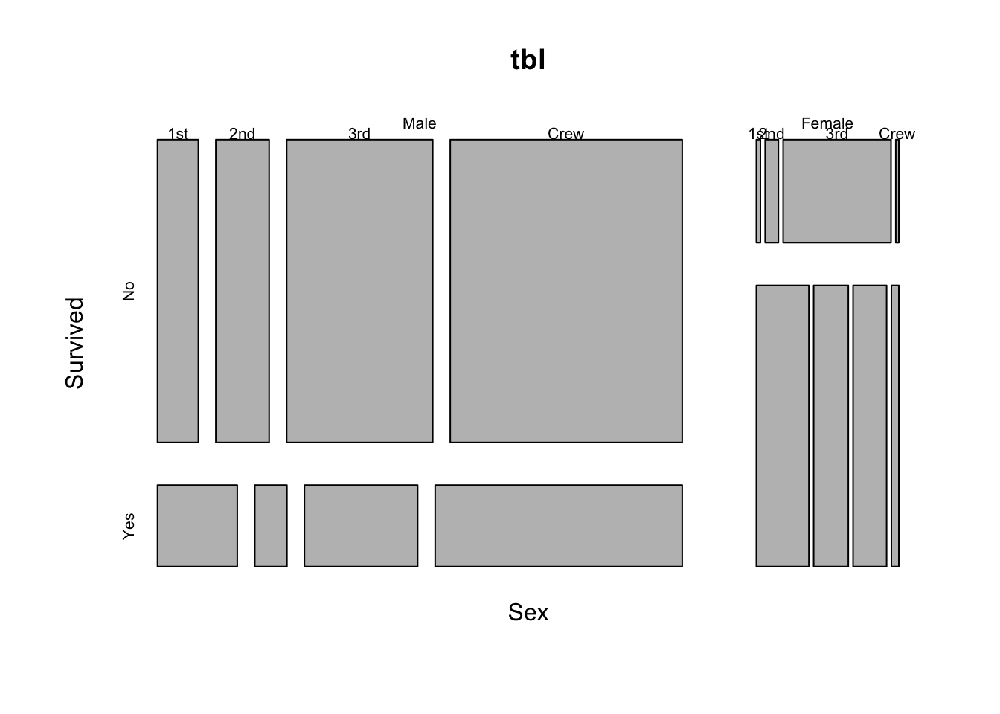
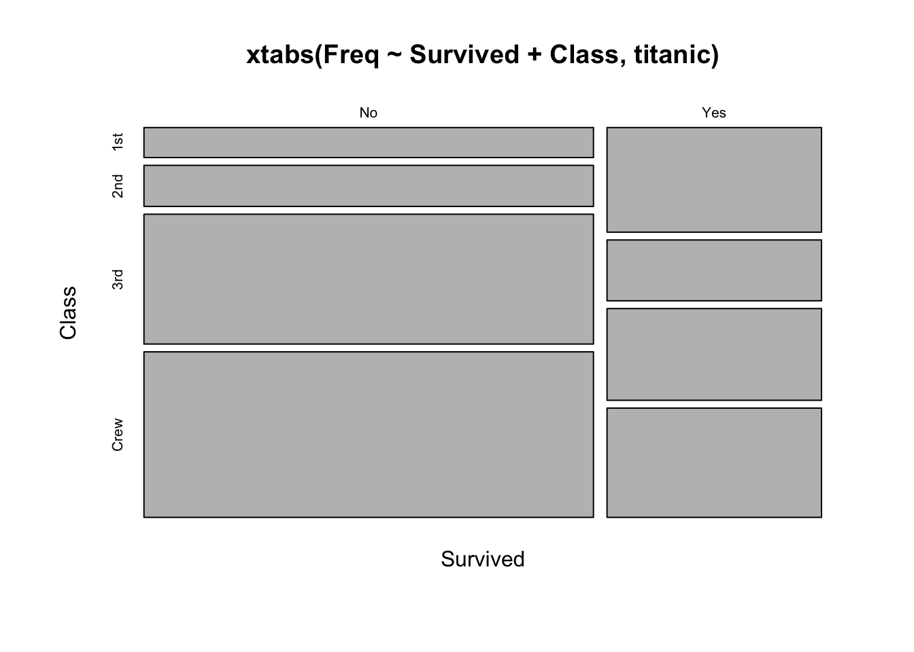

Chapter 3 Bivariate Data
fat## case body.fat body.fat.siri density age weight height BMI ffweight neck
## 1 1 12.6 12.3 1.0708 23 154.25 67.75 23.7 134.9 36.2
## 2 2 6.9 6.1 1.0853 22 173.25 72.25 23.4 161.3 38.5
## 3 3 24.6 25.3 1.0414 22 154.00 66.25 24.7 116.0 34.0
## 4 4 10.9 10.4 1.0751 26 184.75 72.25 24.9 164.7 37.4
## 5 5 27.8 28.7 1.0340 24 184.25 71.25 25.6 133.1 34.4
## 6 6 20.6 20.9 1.0502 24 210.25 74.75 26.5 167.0 39.0
## 7 7 19.0 19.2 1.0549 26 181.00 69.75 26.2 146.6 36.4
## 8 8 12.8 12.4 1.0704 25 176.00 72.50 23.6 153.6 37.8
## 9 9 5.1 4.1 1.0900 25 191.00 74.00 24.6 181.3 38.1
## 10 10 12.0 11.7 1.0722 23 198.25 73.50 25.8 174.4 42.1
## 11 11 7.5 7.1 1.0830 26 186.25 74.50 23.6 172.3 38.5
## 12 12 8.5 7.8 1.0812 27 216.00 76.00 26.3 197.7 39.4
## 13 13 20.5 20.8 1.0513 32 180.50 69.50 26.3 143.5 38.4
## 14 14 20.8 21.2 1.0505 30 205.25 71.25 28.5 162.5 39.4
## 15 15 21.7 22.1 1.0484 35 187.75 69.50 27.4 147.0 40.5
## 16 16 20.5 20.9 1.0512 35 162.75 66.00 26.3 129.3 36.4
## 17 17 28.1 29.0 1.0333 34 195.75 71.00 27.3 140.8 38.9
## 18 18 22.4 22.9 1.0468 32 209.25 71.00 29.2 162.5 42.1
## 19 19 16.1 16.0 1.0622 28 183.75 67.75 28.2 154.3 38.0
## 20 20 16.5 16.5 1.0610 33 211.75 73.50 27.6 176.8 40.0
## 21 21 19.0 19.1 1.0551 28 179.00 68.00 27.3 145.1 39.1
## 22 22 15.3 15.2 1.0640 28 200.50 69.75 29.1 169.8 41.3
## 23 23 15.7 15.6 1.0631 31 140.25 68.25 21.2 118.2 33.9
## 24 24 17.6 17.7 1.0584 32 148.75 70.00 21.4 122.6 35.5
## 25 25 14.2 14.0 1.0668 28 151.25 67.75 23.2 129.8 34.5
## 26 26 4.6 3.7 1.0911 27 159.25 71.50 21.9 151.9 35.7
## 27 27 8.5 7.9 1.0811 34 131.50 67.50 20.3 120.3 36.2
## 28 28 22.4 22.9 1.0468 31 148.00 67.50 22.9 114.9 38.8
## 29 29 4.7 3.7 1.0910 27 133.25 64.75 22.4 127.0 36.4
## 30 30 9.4 8.8 1.0790 29 160.75 69.00 23.8 145.7 36.7
## 31 31 12.3 11.9 1.0716 32 182.00 73.75 23.6 159.7 38.7
## 32 32 6.5 5.7 1.0862 29 160.25 71.25 22.2 149.8 37.3
## 33 33 13.4 11.8 1.0719 27 168.00 71.25 23.3 142.5 38.1
## 34 34 20.9 21.3 1.0502 41 218.50 71.00 30.5 172.7 39.8
## 35 35 31.1 32.3 1.0263 41 247.25 73.50 32.2 170.4 42.1
## 36 36 38.2 40.1 1.0101 49 191.75 65.00 32.0 118.4 38.4
## 37 37 23.6 24.2 1.0438 40 202.25 70.00 29.1 154.5 38.5
## 38 38 27.5 28.4 1.0346 50 196.75 68.25 29.7 142.6 42.1
## 39 39 33.8 35.2 1.0202 46 363.15 72.25 48.9 240.5 51.2
## 40 40 31.3 32.6 1.0258 50 203.00 67.00 31.8 139.4 40.2
## 41 41 33.1 34.5 1.0217 45 262.75 68.75 39.1 175.8 43.2
## 42 42 31.7 32.9 1.0250 44 205.00 29.50 29.9 140.1 36.6
## 43 43 30.4 31.6 1.0279 48 217.00 70.00 31.2 151.1 37.3
## 44 44 30.8 32.0 1.0269 41 212.00 71.50 29.2 146.7 41.5
## 45 45 8.4 7.7 1.0814 39 125.25 68.00 19.1 114.7 31.5
## 46 46 14.1 13.9 1.0670 43 164.25 73.25 21.3 141.1 35.7
## 47 47 11.2 10.8 1.0742 40 133.50 67.50 20.6 118.5 33.6
## 48 48 6.4 5.6 1.0665 39 148.50 71.25 20.6 139.0 34.6
## 49 49 13.4 13.6 1.0678 45 135.75 68.50 20.4 117.6 32.8
## 50 50 5.0 4.0 1.0903 47 127.50 66.75 20.2 121.2 34.0
## 51 51 10.7 10.2 1.0756 47 158.25 72.25 21.3 141.4 34.9
## 52 52 7.4 6.6 1.0840 40 139.25 69.00 20.6 129.0 34.3
## 53 53 8.7 8.0 1.0807 51 137.25 67.75 21.1 125.3 36.5
## 54 54 7.1 6.3 1.0848 49 152.75 73.50 19.9 142.0 35.1
## 55 55 4.9 3.9 1.0906 42 136.25 67.50 21.1 129.6 37.8
## 56 56 22.2 22.6 1.0473 54 198.00 72.00 26.9 154.1 39.9
## 57 57 20.1 20.4 1.0524 58 181.50 68.00 27.6 145.1 39.1
## 58 58 27.1 28.0 1.0356 62 201.25 69.50 29.3 146.7 40.5
## 59 59 30.4 31.5 1.0280 54 202.50 70.75 28.4 141.0 40.5
## 60 60 24.0 24.6 1.0430 61 179.75 65.75 29.2 136.7 38.4
## 61 61 25.4 26.1 1.0396 62 216.00 73.25 28.2 161.2 41.4
## 62 62 28.8 29.8 1.0317 56 178.75 68.50 26.8 127.4 35.6
## 63 63 29.6 30.7 1.0298 54 193.25 70.25 27.6 136.1 38.0
## 64 64 25.1 25.8 1.0403 61 178.00 67.00 27.9 133.3 37.4
## 65 65 31.0 32.3 1.0264 57 205.50 70.00 29.5 141.7 40.1
## 66 66 28.9 30.0 1.0313 55 183.50 67.50 28.3 130.4 40.9
## 67 67 21.1 21.5 1.0499 54 151.50 70.75 21.3 119.6 35.6
## 68 68 14.0 13.8 1.0673 55 154.75 71.50 21.3 133.1 36.9
## 69 69 7.1 6.3 1.0847 54 155.25 69.25 22.8 144.2 37.5
## 70 70 13.2 12.9 1.0693 55 156.75 71.50 21.6 136.1 36.3
## 71 71 23.7 24.3 1.0439 62 167.50 71.50 23.1 127.8 35.5
## 72 72 9.4 8.8 1.0788 55 146.75 68.75 21.9 132.9 38.7
## 73 73 9.1 8.5 1.0796 56 160.75 73.75 20.8 146.1 36.4
## 74 74 13.7 13.5 1.0680 55 125.00 64.00 21.5 107.9 33.2
## 75 75 12.0 11.8 1.0720 61 143.00 65.75 23.3 125.9 36.5
## 76 76 18.3 18.5 1.0666 61 148.25 67.50 22.9 121.1 36.0
## 77 77 9.2 8.8 1.0790 57 162.50 69.50 23.7 147.5 38.7
## 78 78 21.7 22.2 1.0483 69 177.75 68.50 26.7 139.1 38.7
## 79 79 21.1 21.5 1.0498 81 161.25 70.25 23.0 127.2 37.8
## 80 80 18.6 18.8 1.0560 66 171.25 69.25 25.1 139.5 37.4
## 81 81 30.2 31.4 1.0283 67 163.75 67.75 25.1 114.3 38.4
## 82 82 26.0 26.8 1.0382 64 150.25 67.25 23.4 111.2 38.1
## 83 83 18.2 18.4 1.0568 64 190.25 72.75 25.3 155.6 39.3
## 84 84 26.2 27.0 1.0377 70 170.75 70.00 24.5 126.0 38.7
## 85 85 26.1 27.0 1.0378 72 168.00 69.25 24.7 124.1 38.5
## 86 86 25.8 26.6 1.0386 67 167.00 67.50 26.0 123.9 36.5
## 87 87 15.0 14.9 1.0648 72 157.75 67.25 24.6 134.1 37.7
## 88 88 22.6 23.1 1.0462 64 160.00 65.75 26.0 123.8 36.5
## 89 89 8.8 8.3 1.0800 46 176.75 72.50 23.7 161.1 38.0
## 90 90 14.3 14.1 1.0666 48 176.00 73.00 23.3 150.9 36.7
## 91 91 20.2 20.5 1.0520 46 177.00 70.00 25.4 141.3 37.2
## 92 92 18.1 18.2 1.0573 44 179.75 69.50 26.2 147.3 39.2
## 93 93 9.2 8.5 1.0795 47 165.25 70.50 23.4 150.1 37.5
## 94 94 24.2 24.9 1.0424 46 192.50 71.75 26.3 145.9 38.0
## 95 95 9.6 9.0 1.0785 47 184.25 74.50 23.4 166.6 37.3
## 96 96 17.3 17.4 1.0991 53 224.50 77.75 26.1 185.7 41.1
## 97 97 10.1 9.6 1.0770 38 188.75 73.25 24.8 169.6 37.5
## 98 98 11.1 11.3 1.0730 50 162.50 66.50 25.9 143.5 38.7
## 99 99 17.7 17.8 1.0582 46 156.50 68.25 23.7 128.8 35.9
## 100 100 21.7 22.2 1.0484 47 197.00 72.00 26.7 154.2 40.0
## 101 101 20.8 21.2 1.0506 49 198.50 73.50 25.9 157.2 40.1
## 102 102 20.1 20.4 1.0524 48 173.75 72.00 23.6 138.9 37.0
## 103 103 19.8 20.1 1.0530 41 172.75 71.25 24.0 138.6 36.3
## 104 104 21.9 22.3 1.0480 49 196.75 73.75 25.5 153.7 40.7
## 105 105 24.7 25.4 1.0412 43 177.00 69.25 26.0 133.2 39.6
## 106 106 17.8 18.0 1.0578 43 165.50 68.50 24.8 136.0 31.1
## 107 107 19.1 19.3 1.0547 43 200.25 73.50 26.0 162.0 38.6
## 108 108 18.2 18.3 1.0569 52 203.25 74.25 26.0 166.3 42.0
## 109 109 17.2 17.3 1.0593 43 194.00 75.50 24.0 160.6 38.5
## 110 110 21.0 21.4 1.0500 40 168.50 69.25 24.7 133.1 34.2
## 111 111 19.5 19.7 1.0538 43 170.75 68.50 25.6 137.5 37.2
## 112 112 27.1 28.0 1.0355 43 183.25 70.00 26.3 133.5 37.1
## 113 113 21.6 22.1 1.0486 47 178.25 70.00 25.6 139.7 40.2
## 114 114 20.9 21.3 1.0503 42 163.00 70.25 23.3 128.9 35.3
## 115 115 25.9 26.7 1.0384 48 175.25 71.75 24.0 129.9 38.0
## 116 116 16.7 16.7 1.0607 40 158.00 69.25 23.4 131.7 36.3
## 117 117 19.8 20.1 1.0529 48 177.25 72.75 23.6 142.1 36.8
## 118 118 14.1 13.9 1.0671 51 179.00 72.00 24.3 153.8 41.0
## 119 119 25.1 25.8 1.0404 40 191.00 74.00 24.6 143.1 38.3
## 120 120 17.9 18.1 1.0575 44 187.50 72.25 25.3 153.8 38.0
## 121 121 27.0 27.9 1.0358 52 206.50 74.50 26.2 150.7 40.8
## 122 122 24.6 25.3 1.0414 44 185.25 71.50 25.5 139.6 39.5
## 123 123 14.8 14.7 1.0652 40 160.25 68.75 23.9 136.5 36.9
## 124 124 16.0 16.0 1.0623 47 151.50 66.75 23.9 127.3 36.9
## 125 125 14.0 13.8 1.0674 50 161.00 66.50 25.6 138.5 37.7
## 126 126 17.4 17.5 1.0587 46 167.00 67.00 26.2 137.9 36.6
## 127 127 26.4 27.2 1.0373 42 177.50 68.75 26.4 130.7 38.9
## 128 128 17.4 17.4 1.0590 43 152.25 67.75 23.4 125.8 37.5
## 129 129 20.4 20.8 1.0515 40 192.25 73.25 25.2 153.0 39.8
## 130 130 15.0 14.9 1.0648 42 165.25 69.75 23.9 140.5 38.3
## 131 131 18.0 18.1 1.0575 49 171.75 71.50 23.7 140.9 35.5
## 132 132 22.2 22.7 1.0472 40 171.25 70.50 24.3 133.3 36.3
## 133 133 23.1 23.6 1.0452 47 197.00 73.25 25.8 151.2 37.8
## 134 134 25.3 26.1 1.0398 50 157.00 66.75 24.8 117.2 37.8
## 135 135 23.8 24.4 1.0435 41 168.25 69.50 24.5 128.3 36.5
## 136 136 26.3 27.1 1.0374 44 186.00 69.75 26.8 137.1 37.8
## 137 137 21.4 21.8 1.0491 39 166.75 70.75 23.5 131.0 37.0
## 138 138 28.4 29.4 1.0325 43 187.75 74.00 24.1 134.4 37.7
## 139 139 21.8 22.4 1.0481 40 168.25 71.25 23.3 131.6 34.3
## 140 140 20.1 20.4 1.0522 49 212.75 75.00 26.6 169.9 40.8
## 141 141 24.3 24.9 1.0422 40 176.75 71.00 24.6 133.8 37.4
## 142 142 18.1 18.3 1.0571 40 173.25 69.50 25.3 141.8 36.5
## 143 143 22.7 23.3 1.0459 52 167.00 67.75 25.6 129.0 37.5
## 144 144 9.9 9.4 1.0775 23 159.75 72.25 21.6 143.9 35.5
## 145 145 10.8 10.3 1.0754 23 188.15 77.50 22.1 168.4 38.0
## 146 146 14.4 14.2 1.0664 24 156.00 70.75 21.9 133.6 35.7
## 147 147 19.0 19.2 1.0550 24 208.50 72.75 27.7 168.9 39.2
## 148 148 28.6 29.6 1.0322 25 206.50 69.75 29.8 147.5 40.9
## 149 149 6.1 5.3 1.0873 25 143.75 72.50 19.3 135.0 35.2
## 150 150 24.5 25.2 1.0416 26 223.00 70.25 31.8 168.3 40.6
## 151 151 9.9 9.4 1.0776 26 152.25 69.00 22.5 137.2 35.4
## 152 152 19.1 19.6 1.0542 26 241.75 74.50 30.7 195.1 41.8
## 153 153 10.6 10.1 1.0758 27 146.00 72.25 19.7 130.5 34.1
## 154 154 16.5 16.5 1.0610 27 156.75 67.25 24.4 130.9 37.9
## 155 155 20.5 21.0 1.0510 27 200.25 73.50 26.1 159.3 38.2
## 156 156 17.2 17.3 1.0594 28 171.50 75.25 21.6 142.0 35.6
## 157 157 30.1 31.2 1.0287 28 205.75 69.00 30.4 143.9 38.5
## 158 158 10.5 10.0 1.0761 28 182.50 72.25 24.6 163.4 37.0
## 159 159 12.8 12.5 1.0704 30 136.50 68.75 20.3 119.1 35.9
## 160 160 22.0 22.5 1.0477 31 177.25 71.50 24.4 138.3 36.2
## 161 161 9.9 9.4 1.0775 31 151.25 72.25 20.4 136.2 35.0
## 162 162 14.8 14.6 1.0653 33 196.00 73.00 25.9 167.0 38.5
## 163 163 13.3 13.0 1.0690 33 184.25 68.75 24.4 159.8 40.7
## 164 164 15.2 15.1 1.0644 34 140.00 70.50 19.8 118.8 36.0
## 165 165 26.5 27.3 1.0370 34 218.75 72.00 29.7 160.8 39.5
## 166 166 19.0 19.2 1.0549 35 217.00 73.75 28.1 175.8 40.5
## 167 167 21.4 21.8 1.0492 35 166.25 68.00 25.3 130.7 38.5
## 168 168 20.0 20.3 1.0525 35 224.75 72.25 30.3 179.7 43.9
## 169 169 34.7 34.3 1.0180 35 228.25 69.50 33.3 149.3 40.4
## 170 170 16.5 16.5 1.0610 35 172.75 69.50 25.2 144.2 37.6
## 171 171 4.1 3.0 1.0926 35 152.25 67.75 23.4 146.1 37.0
## 172 172 1.9 0.7 1.0983 35 125.75 65.50 20.6 123.4 34.0
## 173 173 20.2 20.5 1.0521 35 177.25 71.00 24.8 141.7 38.4
## 174 174 16.8 16.9 1.0603 36 176.25 71.50 24.3 146.6 38.7
## 175 175 24.6 25.3 1.0414 36 226.75 71.75 31.0 170.9 41.5
## 176 176 10.4 9.9 1.0763 37 145.25 69.25 21.3 130.2 36.0
## 177 177 13.4 13.1 1.0689 37 151.00 67.00 23.7 130.8 35.3
## 178 178 28.8 29.9 1.0316 37 241.25 71.50 33.2 171.7 42.1
## 179 179 22.0 22.5 1.0477 38 187.25 69.25 27.5 146.1 38.0
## 180 180 16.8 16.9 1.0603 39 234.75 74.50 29.8 195.3 42.8
## 181 181 25.8 26.6 1.0387 39 219.25 74.25 28.0 162.7 40.0
## 182 182 0.0 0.0 1.1089 40 118.50 68.00 18.1 118.5 33.8
## 183 183 11.9 11.5 1.0725 40 145.75 67.25 22.7 128.4 35.5
## 184 184 12.4 12.1 1.0713 40 159.25 69.75 23.0 139.5 35.3
## 185 185 17.4 17.5 1.0587 40 170.50 74.25 21.8 140.8 37.7
## 186 186 9.2 8.6 1.0794 40 167.50 71.50 23.1 152.1 39.4
## 187 187 23.0 23.6 1.0453 41 232.75 74.25 29.7 179.2 41.9
## 188 188 20.1 20.4 1.0524 41 210.50 72.00 28.6 168.3 38.5
## 189 189 20.2 20.5 1.0520 41 202.25 72.50 27.0 161.4 40.8
## 190 190 23.8 24.4 1.0434 41 185.00 68.25 28.0 141.0 38.0
## 191 191 11.8 11.4 1.0728 41 153.00 69.25 22.5 135.0 36.4
## 192 192 36.5 38.1 1.0140 42 244.25 76.00 29.8 155.2 41.8
## 193 193 16.0 15.9 1.0624 42 193.50 70.50 27.4 162.6 40.7
## 194 194 24.0 24.7 1.0429 42 224.75 74.75 28.3 170.8 38.5
## 195 195 22.3 22.8 1.0470 42 162.75 72.75 21.6 126.5 35.4
## 196 196 24.8 25.5 1.0411 42 180.00 68.25 27.2 135.4 38.5
## 197 197 21.5 22.0 1.0488 42 156.25 69.00 23.1 122.6 35.5
## 198 198 17.6 17.7 1.0583 42 168.00 71.50 23.1 138.4 36.5
## 199 199 7.3 6.6 1.0841 42 167.25 72.75 22.3 155.1 37.6
## 200 200 22.6 23.6 1.0462 43 170.75 67.50 26.4 132.1 37.4
## 201 201 12.5 12.2 1.0709 43 178.25 70.25 25.4 155.9 37.8
## 202 202 21.7 22.1 1.0484 43 150.00 69.25 22.0 117.5 35.2
## 203 203 27.7 28.7 1.0340 43 200.50 71.50 27.6 144.9 37.9
## 204 204 6.8 6.0 1.0854 44 184.00 74.00 23.7 171.4 37.9
## 205 205 33.4 34.8 1.0209 44 223.00 69.75 32.3 148.5 40.9
## 206 206 16.6 16.6 1.0610 44 208.75 73.00 27.6 174.2 41.9
## 207 207 31.7 32.9 1.0250 44 166.00 65.50 27.2 113.5 39.1
## 208 208 31.5 32.8 1.0254 47 195.00 72.50 26.1 133.6 40.2
## 209 209 10.1 9.6 1.0771 47 160.50 70.25 22.9 144.3 36.0
## 210 210 11.3 10.8 1.0742 47 159.75 70.75 22.5 141.8 34.5
## 211 211 7.8 7.1 1.0829 49 140.50 68.00 21.4 129.5 35.8
## 212 212 26.4 27.2 1.0373 49 216.25 74.50 27.4 159.3 40.2
## 213 213 19.3 19.5 1.0543 49 168.25 71.75 23.0 135.9 38.3
## 214 214 18.5 18.7 1.0561 50 194.75 70.75 27.4 158.7 39.0
## 215 215 19.3 19.5 1.0543 50 172.75 73.00 22.8 139.4 37.4
## 216 216 45.1 47.5 0.9950 51 219.00 64.00 37.6 120.2 41.2
## 217 217 13.8 13.6 1.0678 51 149.25 69.75 21.6 128.7 34.8
## 218 218 8.2 7.5 1.0819 51 154.50 70.00 22.2 141.9 36.9
## 219 219 23.9 24.5 1.0433 52 199.25 71.75 27.2 151.7 39.4
## 220 220 15.1 15.0 1.0646 53 154.50 69.25 22.7 131.2 37.6
## 221 221 12.7 12.4 1.0706 54 153.25 70.50 24.5 151.3 38.5
## 222 222 25.3 26.0 1.0399 54 230.00 72.25 31.0 171.9 42.5
## 223 223 11.9 11.5 1.0726 54 161.75 67.50 25.0 142.6 37.4
## 224 224 6.1 5.2 1.0874 55 142.25 67.25 22.2 133.6 35.2
## 225 225 11.3 10.9 1.0740 55 179.75 68.75 26.8 159.5 41.1
## 226 226 12.8 12.5 1.0703 55 126.50 66.75 20.0 110.3 33.4
## 227 227 14.9 14.8 1.0650 55 169.50 68.25 25.6 144.2 37.2
## 228 228 24.5 25.2 1.0418 55 198.50 74.25 25.3 149.9 38.3
## 229 229 15.0 14.9 1.0647 56 174.50 69.50 25.4 148.3 38.1
## 230 230 16.9 17.0 1.0601 56 167.75 68.50 25.2 139.4 37.4
## 231 231 11.1 10.6 1.0745 57 147.75 65.75 24.1 131.4 35.2
## 232 232 16.1 16.1 1.0620 57 182.25 71.75 24.9 152.9 39.4
## 233 233 15.5 15.4 1.0636 58 175.50 71.50 24.2 148.4 38.0
## 234 234 25.9 26.7 1.0384 58 161.75 67.25 25.2 119.9 35.1
## 235 235 25.5 25.8 1.0403 60 157.75 67.50 24.1 117.5 40.4
## 236 236 18.4 18.6 1.0563 62 168.75 67.50 26.1 137.6 38.3
## 237 237 24.0 24.8 1.0424 62 191.50 72.25 25.8 145.2 40.6
## 238 238 26.4 27.3 1.0372 63 219.15 69.50 31.9 161.2 40.2
## 239 239 12.7 12.4 1.0705 64 155.25 69.50 22.6 135.5 37.9
## 240 240 28.8 29.9 1.0316 65 189.75 65.75 30.9 135.1 40.8
## 241 241 17.0 17.0 1.0599 65 127.50 65.75 20.8 105.9 34.7
## 242 242 33.6 35.0 1.0207 65 224.50 68.25 33.9 149.2 38.8
## 243 243 29.3 30.4 1.0304 66 234.25 72.00 31.8 165.6 41.4
## 244 244 31.4 32.6 1.0256 67 227.75 72.75 30.3 156.3 41.3
## 245 245 28.1 29.0 1.0334 67 199.50 68.50 29.9 143.6 40.7
## 246 246 15.3 15.2 1.0641 68 155.50 69.25 22.8 131.8 36.3
## 247 247 29.1 30.2 1.0308 69 215.50 70.50 30.5 152.7 40.8
## 248 248 11.5 11.0 1.0736 70 134.25 67.00 21.1 118.9 34.9
## 249 249 32.3 33.6 1.0236 72 201.00 69.75 29.1 136.1 40.9
## 250 250 28.3 29.3 1.0328 72 186.75 66.00 30.2 133.9 38.9
## 251 251 25.3 26.0 1.0399 72 190.75 70.50 27.0 142.6 38.9
## 252 252 30.7 31.9 1.0271 74 207.50 70.00 29.8 143.7 40.8
## chest abdomen hip thigh knee ankle bicep forearm wrist
## 1 93.1 85.2 94.5 59.0 37.3 21.9 32.0 27.4 17.1
## 2 93.6 83.0 98.7 58.7 37.3 23.4 30.5 28.9 18.2
## 3 95.8 87.9 99.2 59.6 38.9 24.0 28.8 25.2 16.6
## 4 101.8 86.4 101.2 60.1 37.3 22.8 32.4 29.4 18.2
## 5 97.3 100.0 101.9 63.2 42.2 24.0 32.2 27.7 17.7
## 6 104.5 94.4 107.8 66.0 42.0 25.6 35.7 30.6 18.8
## 7 105.1 90.7 100.3 58.4 38.3 22.9 31.9 27.8 17.7
## 8 99.6 88.5 97.1 60.0 39.4 23.2 30.5 29.0 18.8
## 9 100.9 82.5 99.9 62.9 38.3 23.8 35.9 31.1 18.2
## 10 99.6 88.6 104.1 63.1 41.7 25.0 35.6 30.0 19.2
## 11 101.5 83.6 98.2 59.7 39.7 25.2 32.8 29.4 18.5
## 12 103.6 90.9 107.7 66.2 39.2 25.9 37.2 30.2 19.0
## 13 102.0 91.6 103.9 63.4 38.3 21.5 32.5 28.6 17.7
## 14 104.1 101.8 108.6 66.0 41.5 23.7 36.9 31.6 18.8
## 15 101.3 96.4 100.1 69.0 39.0 23.1 36.1 30.5 18.2
## 16 99.1 92.8 99.2 63.1 38.7 21.7 31.1 26.4 16.9
## 17 101.9 96.4 105.2 64.8 40.8 23.1 36.2 30.8 17.3
## 18 107.6 97.5 107.0 66.9 40.0 24.4 38.2 31.6 19.3
## 19 106.8 89.6 102.4 64.2 38.7 22.9 37.2 30.5 18.5
## 20 106.2 100.5 109.0 65.8 40.6 24.0 37.1 30.1 18.2
## 21 103.3 95.9 104.9 63.5 38.0 22.1 32.5 30.3 18.4
## 22 111.4 98.8 104.8 63.4 40.6 24.6 33.0 32.8 19.9
## 23 86.0 76.4 94.6 57.4 35.3 22.2 27.9 25.9 16.7
## 24 86.7 80.0 93.4 54.9 36.2 22.1 29.8 26.7 17.1
## 25 90.2 76.3 95.8 58.4 35.5 22.9 31.1 28.0 17.6
## 26 89.6 79.7 96.5 55.0 36.7 22.5 29.9 28.2 17.7
## 27 88.6 74.6 85.3 51.7 34.7 21.4 28.7 27.0 16.5
## 28 97.4 88.7 94.7 57.5 36.0 21.0 29.2 26.6 17.0
## 29 93.5 73.9 88.5 50.1 34.5 21.3 30.5 27.9 17.2
## 30 97.4 83.5 98.7 58.9 35.3 22.6 30.1 26.7 17.6
## 31 100.5 88.7 99.8 57.5 38.7 33.9 32.5 27.7 18.4
## 32 93.5 84.5 100.6 58.5 38.8 21.5 30.1 26.4 17.9
## 33 93.0 79.1 94.5 57.3 36.2 24.5 29.0 30.0 18.8
## 34 111.7 100.5 108.3 67.1 44.2 25.2 37.5 31.5 18.7
## 35 117.0 115.6 116.1 71.2 43.3 26.3 37.3 31.7 19.7
## 36 118.5 113.1 113.8 61.9 38.3 21.9 32.0 29.8 17.0
## 37 106.5 100.9 106.2 63.5 39.9 22.6 35.1 30.6 19.0
## 38 105.6 98.8 104.8 66.0 41.5 24.7 33.2 30.5 19.4
## 39 136.2 148.1 147.7 87.3 49.1 29.6 45.0 29.0 21.4
## 40 114.8 108.1 102.5 61.3 41.1 24.7 34.1 31.0 18.3
## 41 128.3 126.2 125.6 72.5 39.6 26.6 36.4 32.7 21.4
## 42 106.0 104.3 115.5 70.6 42.5 23.7 33.6 28.7 17.4
## 43 113.3 111.2 114.1 67.7 40.9 25.0 36.7 29.8 18.4
## 44 106.6 104.3 106.0 65.0 40.2 23.0 35.8 31.5 18.8
## 45 85.1 76.0 88.2 50.0 34.7 21.0 26.1 23.1 16.1
## 46 96.6 81.5 97.2 58.4 38.2 23.4 29.7 27.4 18.3
## 47 88.2 73.7 88.5 53.3 34.5 22.5 27.9 26.2 17.3
## 48 89.8 79.5 92.7 52.7 37.5 21.9 28.8 26.8 17.9
## 49 92.3 83.4 90.4 52.0 35.8 20.6 28.8 25.5 16.3
## 50 83.4 70.4 87.2 50.6 34.4 21.9 26.8 25.8 16.8
## 51 90.2 86.7 98.3 52.6 37.2 22.4 26.0 25.8 17.3
## 52 89.2 77.9 91.0 51.4 34.9 21.0 26.7 26.1 17.2
## 53 89.7 82.0 89.1 49.3 33.7 21.4 29.6 26.0 16.9
## 54 93.3 79.6 91.6 52.6 37.6 22.6 38.5 27.4 18.5
## 55 87.6 77.6 88.6 51.9 34.9 22.5 27.7 27.5 18.5
## 56 107.6 100.0 99.6 57.2 38.0 22.0 35.9 30.2 18.9
## 57 100.0 99.8 102.5 62.1 39.6 22.5 33.1 28.3 18.5
## 58 111.5 104.2 105.8 61.8 39.8 22.7 37.7 30.9 19.2
## 59 115.4 105.3 97.0 59.1 38.0 22.5 31.6 28.8 18.2
## 60 104.8 98.3 99.6 60.6 37.7 22.9 34.5 29.6 18.5
## 61 112.3 104.8 103.1 61.6 40.9 23.1 36.2 31.8 20.2
## 62 102.9 94.7 100.8 60.9 38.0 22.1 32.5 29.8 18.3
## 63 107.6 102.4 99.4 61.0 39.4 23.6 32.7 29.9 19.1
## 64 105.3 99.7 99.7 60.8 40.1 22.7 33.6 29.0 18.8
## 65 105.3 105.5 108.3 65.0 41.2 24.7 35.3 31.1 18.4
## 66 103.0 100.3 104.2 64.8 40.2 22.7 34.8 30.1 18.7
## 67 90.0 83.9 93.9 55.0 36.1 21.7 29.6 27.4 17.4
## 68 95.4 86.6 91.8 54.3 35.4 21.5 32.8 27.4 18.7
## 69 89.3 78.4 96.1 56.0 37.4 22.4 32.6 28.1 18.1
## 70 94.4 84.6 94.3 51.2 37.4 21.6 27.3 27.1 17.3
## 71 97.6 91.5 98.5 56.6 38.6 22.4 31.5 27.3 18.6
## 72 88.5 82.8 95.5 58.9 37.6 21.6 30.3 27.3 18.3
## 73 93.6 82.9 96.3 52.9 37.5 23.1 29.7 27.3 18.2
## 74 87.7 76.0 88.6 50.9 35.4 19.1 29.3 25.7 16.9
## 75 93.4 83.3 93.0 55.5 35.2 20.9 29.4 27.0 16.8
## 76 91.6 81.8 94.8 54.5 37.0 21.4 29.3 27.0 18.3
## 77 91.6 78.8 94.3 56.7 39.7 24.2 30.2 29.2 18.1
## 78 102.0 95.0 98.3 55.0 38.3 21.8 30.8 25.7 18.8
## 79 96.4 95.4 99.3 53.5 37.5 21.5 31.4 26.8 18.3
## 80 102.7 98.6 100.2 56.5 39.3 22.7 30.3 28.7 19.0
## 81 97.7 95.8 97.1 54.8 38.2 23.7 29.4 27.2 19.0
## 82 97.1 89.0 96.9 54.8 38.0 22.0 29.9 25.2 17.7
## 83 103.1 97.8 99.6 58.9 39.0 23.0 34.3 29.6 19.0
## 84 101.8 94.9 95.0 56.0 36.5 24.1 31.2 27.3 19.2
## 85 101.4 99.8 96.2 56.3 36.6 22.0 29.7 26.3 18.0
## 86 98.9 89.7 96.2 54.7 37.8 33.7 32.4 27.7 18.2
## 87 97.5 88.1 96.9 57.2 37.7 21.8 32.6 28.0 18.8
## 88 104.3 90.9 93.8 57.8 39.5 23.3 29.2 28.4 18.1
## 89 97.3 86.0 99.3 61.0 38.4 23.8 30.2 29.3 18.8
## 90 96.7 86.5 98.3 60.4 39.9 24.4 28.8 29.6 18.7
## 91 99.7 95.6 102.2 58.3 38.2 22.5 29.1 27.7 17.7
## 92 101.9 93.2 100.6 58.9 39.7 23.1 31.4 28.4 18.8
## 93 97.2 83.1 95.4 56.9 38.3 22.1 30.1 28.2 18.4
## 94 106.6 97.5 100.6 58.9 40.5 24.5 33.3 29.6 19.1
## 95 99.6 88.8 101.4 57.4 39.6 24.6 30.3 27.9 17.8
## 96 113.2 99.2 107.5 61.7 42.3 23.2 32.9 30.8 20.4
## 97 99.1 91.6 102.4 60.6 39.4 22.9 31.6 30.1 18.5
## 98 99.4 86.7 96.2 62.1 39.3 23.3 30.6 27.8 18.2
## 99 95.1 88.2 92.8 54.7 37.3 21.9 31.6 27.5 18.2
## 100 107.5 94.0 103.7 62.7 39.0 22.3 35.3 30.9 18.3
## 101 106.5 95.0 101.7 59.0 39.4 22.3 32.2 31.0 18.6
## 102 99.1 92.0 98.3 59.3 38.4 22.4 27.9 26.2 17.0
## 103 96.7 89.2 98.3 60.0 38.4 23.2 31.0 29.2 18.4
## 104 103.5 95.5 101.6 59.1 39.8 25.4 31.0 30.3 19.7
## 105 104.0 98.6 99.5 59.5 36.1 22.0 30.1 27.2 17.7
## 106 93.1 87.3 96.6 54.7 39.0 24.8 31.0 29.4 18.8
## 107 105.2 102.8 103.6 61.2 39.3 23.5 30.5 28.5 18.1
## 108 110.0 101.6 100.7 55.8 38.7 23.4 35.1 29.6 19.1
## 109 110.1 88.7 102.1 57.5 40.0 24.8 35.1 30.7 19.2
## 110 97.8 92.3 100.6 57.5 36.8 22.8 32.1 26.0 17.3
## 111 96.3 90.6 99.3 61.9 38.0 22.3 33.3 28.2 18.1
## 112 108.0 105.0 103.0 63.7 40.0 23.6 33.5 27.8 17.4
## 113 99.7 95.0 98.6 62.3 38.1 23.9 35.3 31.1 19.8
## 114 93.5 89.6 99.8 61.5 37.8 21.9 30.7 27.6 17.4
## 115 100.7 92.4 97.5 59.3 38.1 21.8 31.8 27.3 17.5
## 116 97.0 86.6 92.6 55.9 36.3 22.1 29.8 26.3 17.3
## 117 96.0 90.0 99.7 58.8 38.4 22.8 29.9 28.0 18.1
## 118 99.2 90.0 96.4 56.8 38.8 23.3 33.4 29.8 19.5
## 119 95.4 92.4 104.3 64.6 41.1 24.8 33.6 29.5 18.5
## 120 101.8 87.5 101.0 58.5 39.2 24.5 32.1 28.6 18.0
## 121 104.3 99.2 104.1 58.5 39.3 24.6 33.9 31.2 19.5
## 122 99.2 98.1 101.4 57.1 40.5 23.2 33.0 29.6 18.4
## 123 99.3 83.3 97.5 60.5 38.7 22.6 34.4 28.0 17.6
## 124 94.0 86.1 95.2 58.1 36.5 22.1 30.6 27.5 17.6
## 125 98.9 84.1 94.0 58.5 36.6 23.5 34.4 29.2 18.0
## 126 101.0 89.9 100.0 60.7 36.0 21.9 35.6 30.2 17.6
## 127 98.7 92.1 98.5 60.7 36.8 22.2 33.8 30.3 17.2
## 128 95.9 78.0 93.2 53.5 35.8 20.8 33.9 28.2 17.4
## 129 103.9 93.5 99.5 61.7 39.0 21.8 33.3 29.6 18.1
## 130 96.2 87.0 97.8 57.4 36.9 22.2 31.6 27.8 17.7
## 131 97.8 90.1 95.8 57.0 38.7 23.2 27.5 26.5 17.6
## 132 94.6 90.3 99.1 60.3 38.5 23.0 31.2 28.4 17.1
## 133 103.6 99.8 103.2 61.2 38.1 22.6 33.5 28.6 17.9
## 134 100.4 89.4 92.3 56.1 35.6 20.5 33.6 29.3 17.3
## 135 98.4 87.2 98.4 56.0 36.9 23.0 34.0 29.8 18.1
## 136 104.6 101.1 102.1 58.9 37.9 22.7 30.9 28.8 17.6
## 137 92.9 86.1 95.6 58.8 36.1 22.4 32.7 28.3 17.1
## 138 97.8 98.6 100.6 63.6 39.2 23.8 34.3 28.4 17.7
## 139 98.3 88.5 98.3 58.1 38.4 22.5 31.7 27.4 17.6
## 140 104.7 106.6 107.7 66.5 42.5 24.5 35.5 29.8 18.7
## 141 98.6 93.1 101.6 59.1 39.6 21.6 30.8 27.9 16.6
## 142 99.5 93.0 99.3 60.4 38.2 22.0 32.0 28.5 17.8
## 143 102.7 91.0 98.9 57.1 36.7 22.3 31.6 27.5 17.9
## 144 92.1 77.1 93.9 56.1 36.1 22.7 30.5 27.2 18.2
## 145 96.6 85.3 102.5 59.1 37.6 23.2 31.8 29.7 18.3
## 146 92.7 81.9 95.3 56.4 36.5 22.0 33.5 28.3 17.3
## 147 102.0 99.1 110.1 71.2 43.5 25.2 36.1 30.3 18.7
## 148 110.9 100.5 106.2 68.4 40.8 24.6 33.3 29.7 18.4
## 149 92.3 76.5 92.1 51.9 35.7 22.0 25.8 25.2 16.9
## 150 114.1 106.8 113.9 67.6 42.7 24.7 36.0 30.4 18.4
## 151 92.9 77.6 93.5 56.9 35.9 20.4 31.6 29.0 17.8
## 152 108.3 102.9 114.4 72.9 43.5 25.1 38.5 33.8 19.6
## 153 88.5 72.8 91.1 53.6 36.8 23.8 27.8 26.3 17.4
## 154 94.0 88.2 95.2 56.8 37.4 22.8 30.6 28.3 17.9
## 155 101.1 100.1 105.0 62.1 40.0 24.9 33.7 29.2 19.4
## 156 92.1 83.5 98.3 57.3 37.8 21.7 32.2 27.7 17.7
## 157 105.6 105.0 106.4 68.6 40.0 25.2 35.2 30.7 19.1
## 158 98.5 90.8 102.5 60.8 38.5 25.0 31.6 28.0 18.6
## 159 88.7 76.6 89.8 50.1 34.8 21.8 27.0 34.9 16.9
## 160 101.1 92.4 99.3 59.4 39.0 24.6 30.1 28.2 18.2
## 161 94.0 81.2 91.5 52.5 36.6 21.0 27.0 26.3 16.5
## 162 103.8 95.6 105.1 61.4 40.6 25.0 31.3 29.2 19.1
## 163 98.9 92.1 103.5 64.0 37.3 23.5 33.5 30.6 19.7
## 164 89.2 83.4 89.6 52.4 35.6 20.4 28.3 26.2 16.5
## 165 111.4 106.0 108.8 63.8 42.0 23.4 34.0 31.2 18.5
## 166 107.5 95.1 104.5 64.8 41.3 25.6 36.4 33.7 19.4
## 167 99.1 90.4 95.6 55.5 34.2 21.9 30.2 28.7 17.7
## 168 108.2 100.4 106.8 63.3 41.7 24.6 37.2 33.1 19.8
## 169 114.9 115.9 111.9 74.4 40.6 24.0 36.1 31.8 18.8
## 170 99.1 90.8 98.1 60.1 39.1 23.4 32.5 29.8 17.4
## 171 92.2 81.9 92.8 54.7 36.2 22.1 30.4 27.4 17.7
## 172 90.8 75.0 89.2 50.0 34.8 22.0 24.8 25.9 16.9
## 173 100.5 90.3 98.7 57.8 37.3 22.4 31.0 28.7 17.7
## 174 98.2 90.3 99.9 59.2 37.7 21.5 32.4 28.4 17.8
## 175 115.3 108.8 114.4 69.2 42.4 24.0 35.4 21.0 20.1
## 176 96.8 79.4 89.2 50.3 34.8 22.2 31.0 26.9 16.9
## 177 92.6 83.2 96.4 60.0 38.1 22.0 31.5 26.6 16.7
## 178 119.2 110.3 113.9 69.8 42.6 24.8 34.4 29.5 18.4
## 179 102.7 92.7 101.9 64.7 39.5 24.7 34.8 30.3 18.1
## 180 109.5 104.5 109.9 69.5 43.1 25.8 39.1 32.5 19.9
## 181 108.5 104.6 109.8 68.1 42.8 24.1 35.6 29.0 19.0
## 182 79.3 69.4 85.0 47.2 33.5 20.2 27.7 24.6 16.5
## 183 95.5 83.6 91.6 54.1 36.2 21.8 31.4 28.3 17.2
## 184 92.3 86.8 96.1 58.0 39.4 22.7 30.0 26.4 17.4
## 185 98.9 90.4 95.5 55.4 38.9 22.4 30.5 28.9 17.7
## 186 89.5 83.7 98.1 57.3 39.7 22.6 32.9 29.3 18.2
## 187 117.5 109.3 108.8 67.7 41.3 24.7 37.2 31.8 20.0
## 188 107.4 98.9 104.1 63.5 39.8 23.5 36.4 30.4 19.1
## 189 109.2 98.0 101.8 62.8 41.3 24.8 36.6 32.4 18.8
## 190 103.4 101.2 103.1 61.5 40.4 22.9 33.4 29.2 18.5
## 191 91.4 80.6 92.3 54.3 36.3 21.8 29.6 27.3 17.9
## 192 115.2 113.7 112.4 68.5 45.0 25.5 37.1 31.2 19.9
## 193 104.9 94.1 102.7 60.6 38.6 24.7 34.0 30.1 18.7
## 194 106.7 105.7 111.8 65.3 43.3 26.0 33.7 29.9 18.5
## 195 92.2 85.6 96.5 60.2 38.9 22.4 31.7 27.1 17.1
## 196 101.6 96.6 100.6 61.1 38.4 24.1 32.9 29.8 18.8
## 197 97.8 86.0 96.2 57.7 38.6 24.0 31.2 27.3 17.4
## 198 92.0 89.7 101.0 62.3 38.0 22.3 30.8 27.8 16.9
## 199 94.0 78.0 99.0 57.5 40.0 22.5 30.6 30.0 18.5
## 200 103.7 89.7 94.2 58.5 39.0 24.1 33.8 28.8 18.8
## 201 102.7 89.2 99.2 60.2 39.2 23.8 31.7 28.4 18.6
## 202 91.1 85.7 96.9 55.5 35.7 22.0 29.4 26.6 17.4
## 203 107.2 103.1 105.5 68.8 38.3 23.7 32.1 28.9 18.7
## 204 100.8 89.1 102.6 60.6 39.0 24.0 32.9 29.2 18.4
## 205 121.6 113.9 107.1 63.5 40.3 21.8 34.8 30.7 17.4
## 206 105.6 96.3 102.0 63.3 39.8 24.1 37.3 23.1 19.4
## 207 100.6 93.9 100.1 58.9 37.6 21.4 33.1 29.5 17.3
## 208 102.7 101.3 101.7 60.7 39.4 23.3 36.7 31.6 18.4
## 209 99.8 83.9 91.8 53.0 36.2 22.5 31.4 27.5 17.7
## 210 92.9 84.4 94.0 56.0 38.2 22.6 29.0 26.2 17.6
## 211 91.2 79.4 89.0 51.1 35.0 21.7 30.9 28.8 17.4
## 212 115.6 104.0 109.0 63.7 40.3 23.2 36.8 31.0 18.9
## 213 98.3 89.7 99.1 56.3 38.8 23.0 29.5 27.9 18.6
## 214 103.7 97.6 104.2 60.0 40.9 25.5 32.7 30.0 19.0
## 215 98.7 87.6 96.1 57.1 38.1 21.8 28.6 26.7 18.0
## 216 119.8 122.1 112.8 62.5 36.9 23.6 34.7 29.1 18.4
## 217 92.8 81.1 96.3 53.8 36.5 21.5 31.3 26.3 17.8
## 218 93.3 81.5 94.4 54.7 39.0 22.6 27.5 25.9 18.6
## 219 106.8 100.0 105.0 63.9 39.2 22.9 35.7 30.4 19.2
## 220 93.9 88.7 94.5 53.7 36.2 22.0 28.5 25.7 17.1
## 221 99.0 91.8 96.2 57.7 38.1 23.9 31.4 29.9 18.9
## 222 119.9 110.4 105.5 64.2 42.7 27.0 38.4 32.0 19.6
## 223 94.2 87.6 95.6 59.7 40.2 23.4 27.9 27.0 17.8
## 224 92.7 82.8 91.9 54.4 35.2 22.5 29.4 26.8 17.0
## 225 106.9 95.3 98.2 57.4 37.1 21.8 34.1 31.1 19.2
## 226 88.8 78.2 87.5 50.8 33.0 19.7 25.3 22.0 15.8
## 227 101.7 91.1 97.1 56.6 38.5 22.6 33.4 29.3 18.8
## 228 105.3 96.7 106.6 64.0 42.6 23.4 33.2 30.0 18.4
## 229 104.0 89.4 98.4 58.4 37.4 22.5 34.6 30.1 18.8
## 230 98.6 93.0 97.0 55.4 38.8 23.2 32.4 29.7 19.0
## 231 99.6 86.4 90.1 53.0 35.0 21.3 31.7 27.3 16.9
## 232 103.4 96.7 100.7 59.3 38.6 22.8 31.8 29.1 19.0
## 233 100.2 88.1 97.8 57.1 38.9 23.6 30.9 29.6 18.0
## 234 94.9 94.9 100.2 56.8 35.9 21.0 27.8 26.1 17.6
## 235 97.2 93.3 94.0 54.3 35.7 21.0 31.3 28.7 18.3
## 236 104.7 95.6 93.7 54.4 37.1 22.7 30.3 26.3 18.3
## 237 104.0 98.2 101.1 59.3 40.3 23.0 32.6 28.5 19.0
## 238 117.6 113.8 111.8 63.4 41.1 22.3 35.1 29.6 18.5
## 239 95.8 82.8 94.5 61.2 39.1 22.3 29.8 28.9 18.3
## 240 106.4 100.5 100.5 59.2 38.1 24.0 35.9 30.5 19.1
## 241 93.0 79.7 87.6 50.7 33.4 20.1 28.5 24.8 16.5
## 242 119.6 118.0 114.3 61.3 42.1 23.4 34.9 30.1 19.4
## 243 119.7 109.0 109.1 63.7 42.4 24.6 35.6 30.7 19.5
## 244 115.8 113.4 109.8 65.6 46.0 25.4 35.3 29.8 19.5
## 245 118.3 106.1 101.6 58.2 38.8 24.1 32.1 29.3 18.5
## 246 97.4 84.3 94.4 54.3 37.5 22.6 29.2 27.3 18.5
## 247 113.7 107.6 110.0 63.3 44.0 22.6 37.5 32.6 18.8
## 248 89.2 83.6 88.8 49.6 34.8 21.5 25.6 25.7 18.5
## 249 108.5 105.0 104.5 59.6 40.8 23.2 35.2 28.6 20.1
## 250 111.1 111.5 101.7 60.3 37.3 21.5 31.3 27.2 18.0
## 251 108.3 101.3 97.8 56.0 41.6 22.7 30.5 29.4 19.8
## 252 112.4 108.5 107.1 59.3 42.2 24.6 33.7 30.0 20.9names(fat)## [1] "case" "body.fat" "body.fat.siri" "density"
## [5] "age" "weight" "height" "BMI"
## [9] "ffweight" "neck" "chest" "abdomen"
## [13] "hip" "thigh" "knee" "ankle"
## [17] "bicep" "forearm" "wrist"3.1 Correlation
p.106
correlationis a numeric summary of how closely related are the measures of two numeric variables when they are in a linear relationship.- perfect correlation would mean data on a straight line;
- no correlation means values are scattered
plot(fat$wrist, fat$neck)
or
plot(neck ~ wrist, data = fat)
To investigate correlation, shift centre of scatter plot to the mean of x variable and the mean of y variable and add abline and point functions
- plot below separates the data into 4 quadrants as determined by points that are above and below the mean of all x values and those above and below the mean of all y values
x <- fat$wrist[1:20]; y <- fat$neck[1:20] # data
plot(x, y, main = "Neck by Wrist")
abline(v = mean(x), lty=2) # dashed vertical line
abline(h = mean(y), lty=2) # dashed horizontal line
points(mean(x), mean(y), pch=16, cex=4, col=rgb(0,0,0, .25))  - correlated data shows in opposite regions (bottom left and top right)
3.1.2 Pearson correlation coefficient
- uses
z-scoreinstead of deviations…
\[ cor(x,y)=\frac{1}{n-1}\sum\frac{(x_i-\bar{x})}{s_x}\frac{(y_i-\bar{y})}{s_y}=cov(x,y)/(s_xs_y) \]
- formula is symmetric, so
xandycan have order switched - using
z-scoreremoves the effect of spread and centre by standardizing
3.1.3 Spearman correlation coefficient
Pearsonmeasures the strength of linear ralationship
cor(Animals$body, Animals$brain)## [1] -0.005341163- very low correlation…
plot(Animals$body, Animals$brain)
body <- Animals$body; brain <- Animals$brain
cross_prods <- (body - mean(body)) * (brain - mean(brain))
Animals[cross_prods < 0, ]## body brain
## Dipliodocus 11700 50.0
## Asian elephant 2547 4603.0
## Horse 521 655.0
## Giraffe 529 680.0
## Human 62 1320.0
## Triceratops 9400 70.0
## Brachiosaurus 87000 154.5- brachiosaurus is a huge outlier…
- so, rank the data
cor(rank(body), rank(brain))## [1] 0.7162994or
cor(body, brain, method="spearman")## [1] 0.71629943.1.3.1 correlation with replication
cor(ToothGrowth$dose, ToothGrowth$len)## [1] 0.8026913- positive correlation
- for each dosage there are several experimental units -split data into 3 groups and then compute the correlation for these dosage values and the group averages
l <- split(ToothGrowth$len, ToothGrowth$dose)
group_means <- c(mean(l[[1]]), mean(l[[2]]), mean(l[[3]]))
cor(c(0.5, 1, 2), group_means)## [1] 0.9574428- 0.95 for aggregated data is higher than 0.8 for individual data. In general, correlations formed from averages are typically closer to 1 or -1.
3.1.3.2 correlation v causation
- what is the relationship between average teacher pay and SAT scores?
cor(SAT$salary, SAT$total)## [1] -0.4398834plot(SAT$salary, SAT$total)
plot(total~salary, SAT)
points(total~salary, SAT, subset = perc < 10, pch=15) # square
points(total ~ salary, SAT, subset = perc > 40, pch=16) #solid - shows correlation for each subgroup is positive
- shows correlation for each subgroup is positive
total <- SAT$total; salary <- SAT$salary; perc <- SAT$perc
less_10 <- perc < 10
more_40 <- perc > 40
between <- !less_10 & !more_40
c(less = cor(total[less_10], salary[less_10]),
between = cor(total[between], salary[between]),
more = cor(total[more_40], salary[more_40]))## less between more
## 0.2588199 0.2224926 0.3673461- all correlations are positive for subgroups, yet overall correlation is negative, called
Simpson's paradoxwhere some trend that exists for subgroups disappears when data are aggregated
3.2 Trends
plot(len ~ dose, data=ToothGrowth, pch=16, col=rgb(0,0,0, .25))
points(c(0.5, 1, 2), group_means, cex=1.5, pch=18)
lines(c(0.5, 1, 2), group_means)
- summarize a relationship between two numeric variables
- model for a linear trend can be specified as follows: > The mean response value depends linearly on the predictor value.
\[ \mu_{y|x}=\beta_0+\beta_1x \] where \(\mu_{y|x}\) means the mean of the response variable for a specified value of the predictor \(x\)
- for individual data points this becomes \[ y_i=\beta_0+\beta_1x_i+\epsilon_i \] where \(\epsilon_i\) are the error terms
- we make assumptions about \(\epsilon_i\), that on average, the values of \(\epsilon_i\) are 0
3.3 Bivariate Categorical Data
p132
- usually presented in form of a
two-way contingency table - count occurrences of each possible pair of levels and place frequencies on a grid
- then compare rows and columns
3.3.1 Summarized data
- create tables in R with
rbindorcbind
rbind(c(56,8), c(2,16)) # bind as rows## [,1] [,2]
## [1,] 56 8
## [2,] 2 16cbind(c(56,2), c(8,16)) # bind as columns## [,1] [,2]
## [1,] 56 8
## [2,] 2 16- can also use
matrix
seatbelts <- matrix(c(56, 2, 8, 16), nrow=2)
seatbelts## [,1] [,2]
## [1,] 56 8
## [2,] 2 16rownames(seatbelts) <- c("buckled", "unbuckled")
colnames(seatbelts) <- c("buckled", "unbuckled")
seatbelts## buckled unbuckled
## buckled 56 8
## unbuckled 2 163.3.2 Unsummarized data
p134
headtail(grades, k=3)## prev grade
## 1 B+ B+
## 2 A- A-
## 3 B+ A-
## ...
## 119 F D
## 120 A A-
## 121 A A
## 122 B Btable(grades)## grade
## prev A A- B+ B B- C+ C D F
## A 15 3 1 4 0 0 3 2 0
## A- 3 1 1 0 0 0 0 0 0
## B+ 0 2 2 1 2 0 0 1 1
## B 0 1 1 4 3 1 3 0 2
## B- 0 1 0 2 0 0 1 0 0
## C+ 1 1 0 0 0 0 1 0 0
## C 1 0 0 1 1 3 5 9 7
## D 0 0 0 1 0 0 4 3 1
## F 1 0 0 1 1 1 3 4 113.4 Marginal distributions of two-way tables
p135
- distribution of each variable is called
marginal distribution - marginal distributions can be found by summing down the rows or columns with
margin.table
dimnames(seatbelts) <- list(parent=c("Buckled", "unbuckled"),
child=c("buckled", "unbuckled"))
seatbelts## child
## parent buckled unbuckled
## Buckled 56 8
## unbuckled 2 16margin.table(seatbelts, margin=1) # 1 is for rows## parent
## Buckled unbuckled
## 64 18margin.table(seatbelts, margin=2) # 2 is for columns## child
## buckled unbuckled
## 58 24addmargins will return marginal distributions by extending the table
addmargins(seatbelts)## child
## parent buckled unbuckled Sum
## Buckled 56 8 64
## unbuckled 2 16 18
## Sum 58 24 82tbl <- with(grades, table(prev, grade))
margin.table(tbl, 1)## prev
## A A- B+ B B- C+ C D F
## 28 5 9 15 4 3 27 9 22margin.table(tbl, 2)## grade
## A A- B+ B B- C+ C D F
## 21 9 5 14 7 5 20 19 223.4.1 Conditional distributions of two-way tables
- comparing rows of a two-way table
- does a previous grade influence a grade
prop.table(tbl, margin=1) * 100## grade
## prev A A- B+ B B- C+ C
## A 53.571429 10.714286 3.571429 14.285714 0.000000 0.000000 10.714286
## A- 60.000000 20.000000 20.000000 0.000000 0.000000 0.000000 0.000000
## B+ 0.000000 22.222222 22.222222 11.111111 22.222222 0.000000 0.000000
## B 0.000000 6.666667 6.666667 26.666667 20.000000 6.666667 20.000000
## B- 0.000000 25.000000 0.000000 50.000000 0.000000 0.000000 25.000000
## C+ 33.333333 33.333333 0.000000 0.000000 0.000000 0.000000 33.333333
## C 3.703704 0.000000 0.000000 3.703704 3.703704 11.111111 18.518519
## D 0.000000 0.000000 0.000000 11.111111 0.000000 0.000000 44.444444
## F 4.545455 0.000000 0.000000 4.545455 4.545455 4.545455 13.636364
## grade
## prev D F
## A 7.142857 0.000000
## A- 0.000000 0.000000
## B+ 11.111111 11.111111
## B 0.000000 13.333333
## B- 0.000000 0.000000
## C+ 0.000000 0.000000
## C 33.333333 25.925926
## D 33.333333 11.111111
## F 18.181818 50.000000- comparing rows shows that previous grade has a strong influence on the current grade
3.4.2 xtabs function
- althernative to
table, where the structure of the table is specified with a model formula
headtail(Fingerprints)## Whorls Loops count
## 1 0 0 78
## 2 1 0 106
## 3 2 0 130
## ...
## 33 2 5 NA
## 34 3 5 NA
## 35 4 5 NA
## 36 5 5 NAxtabs(count ~ Whorls + Loops, Fingerprints)## Loops
## Whorls 0 1 2 3 4 5
## 0 78 144 204 211 179 45
## 1 106 153 126 80 32 0
## 2 130 92 55 15 0 0
## 3 125 38 7 0 0 0
## 4 104 26 0 0 0 0
## 5 50 0 0 0 0 03.4.3 ftable
- flattens contingency tables
tbl <- xtabs( ~ Origin + Type + Passengers, Cars93)
ftable(tbl, row.vars=2, col.vars=c(1,3))## Origin USA non-USA
## Passengers 2 4 5 6 7 8 2 4 5 6 7 8
## Type
## Compact 0 0 5 2 0 0 0 1 8 0 0 0
## Large 0 0 0 11 0 0 0 0 0 0 0 0
## Midsize 0 0 6 4 0 0 0 2 9 1 0 0
## Small 0 2 5 0 0 0 0 6 8 0 0 0
## Sporty 1 7 0 0 0 0 1 5 0 0 0 0
## Van 0 0 0 0 4 1 0 0 0 0 4 03.5 Graphical summaries of two-way contingency tables
p.140
- bar plots as with numerical data
3.5.1 Mosaic plots
- suitable for viewing relationships between two or more categorical variables
titanic <- as.data.frame(Titanic)
xtabs(Freq ~ Survived + Class, data=titanic, subset=Sex=="Female")## Class
## Survived 1st 2nd 3rd Crew
## No 4 13 106 3
## Yes 141 93 90 20- need to convert
Titanicto a dataframe as it was a contingency table andxtabsdisplays tabular data
tbl <- xtabs(Freq ~ Sex, titanic)
mosaicplot(tbl)
tbl <- xtabs(Freq ~ Sex + Survived, titanic)
mosaicplot(tbl)
tbl <- xtabs(Freq ~ Sex + Survived + Class, titanic)
mosaicplot(tbl)
3.6 Measures of association for categorical data
p.143
mosaicplot(xtabs(Freq ~ Survived + Class, titanic))
Segmentation of the survived variable by class is different showing they are “correlated” - the value of one depends on the other.
- Pearson’s correlation is for numerical data but these are categorical
-the variables class and survived are not numeric but they are naturally ordered
- to make ordered factors out of the data.
survived <- rep(titanic$Survived, titanic$Freq)
survivied <- ordered(survived)
class <- rep(titanic$Class, titanic$Freq)
class <- ordered(class)
head(class)## [1] 3rd 3rd 3rd 3rd 3rd 3rd
## Levels: 1st < 2nd < 3rd < Crew- That the levels are ordered is indicated with
<above - now we can coerce them into numeric data with
as.numericand calculatecorrelation
cor(as.numeric(survived), as.numeric(class), method="kendall")## [1] -0.224474- negative correlation is due to the ordering of class with
1stbeing a 1 andcrewbeing a 4